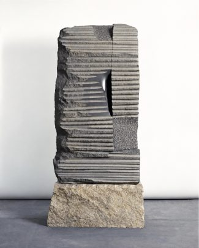
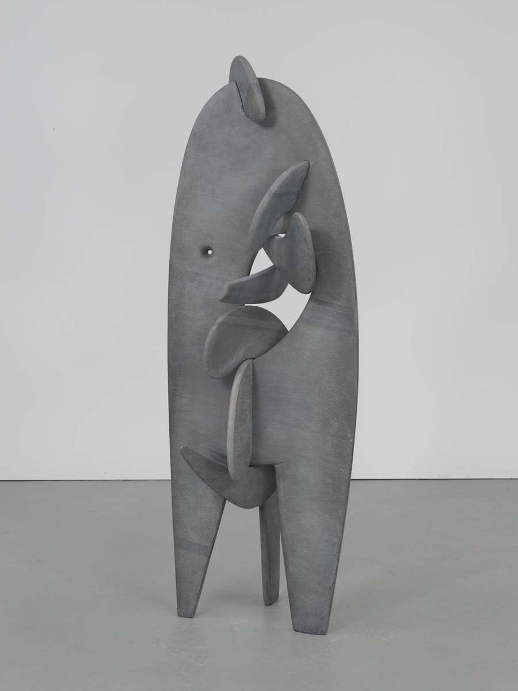
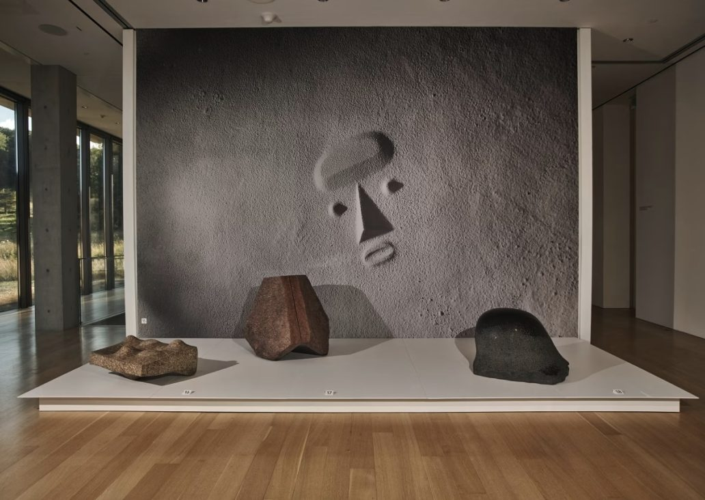
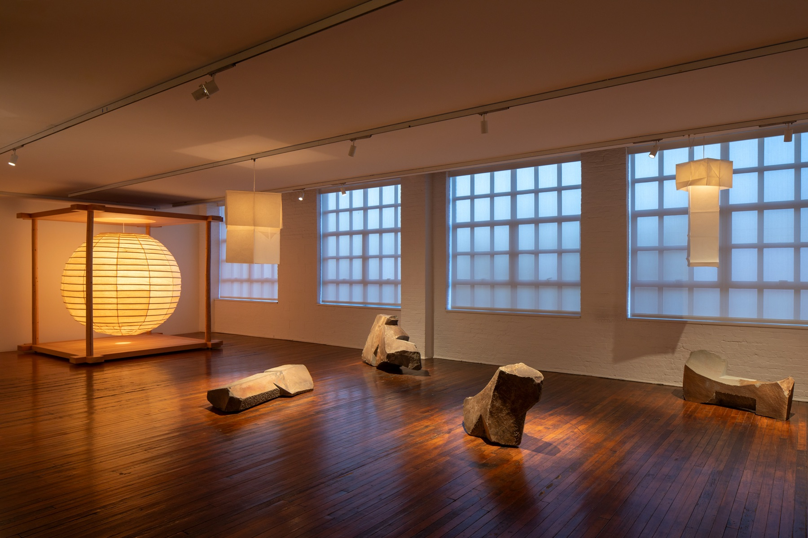

Explore the
iconic Akari
series
Everything is sculpture. Anymaterial, any idea withouthindrance born into space,I consider sculpture.
Isamu Noguchi



Isamu Noguchi (1904–1988) was a Japanese American artist and designer whose career spanned more than six decades. His work encompassed sculpture, furniture, architecture, and landscape design, earning him recognition as one of the most influential artists of the twentieth century.


For Noguchi, sculpture extended beyond the object itself. He explored how forms interact with their surroundings, using material, scale, and spatial relationships to transform the way people experience their environment.

View all
works

01 / 05




See all
exhibitions